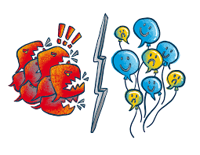

NYC HATE CRIMES
HOME PAGE
<
What is NYC Hate Crime?
In accordance with the New York State Penal Law, the New York City Police Department uses the following guideline to identify hate crime and bias incidents: "A bias incident is any offense or unlawful act that is motivated in whole or substantial part by a person's, a group's or a place's identification with a particular race, color, religion, ethnicity, gender, age, disability, ancestry, national origin, or sexual orientation (including gay, lesbian, bi-sexual, and transgender) as determined by the commanding officer of the Hate Crime Task Force." Hate crimes may have consequences far beyond the criminal act itself. Becoming the victim of a crime is traumatic, but if the act was committed because of who you are or what you believe, the violation is even more hurtful and may cause deep emotional impacts. All hate crimes are serious incidents and are treated as such by the Police Department. Crimes that are motivated by hate are vigorously investigated by the NYPD Hate Crime Task Force.
Hate crimes may have consequences far beyond the criminal act itself. Becoming the victim of a crime is traumatic, but if the act was committed because of who you are or what you believe, the violation is even more hurtful and may cause deep emotional impacts.
All hate crimes are serious incidents and are treated as such by the Police Department. Crimes that are motivated by hate are vigorously investigated by the NYPD Hate Crime Task Force.
See more information
How to Report a Hate Crime
A person reports a hate crime in the same manner as they would report any other crime. If it is a serious crime in progress, call 911. If it is a non-serious crime, or a crime that occurred in the past, call your local precinct. The responding police officers will provide whatever immediate assistance is needed, and begin the reporting process. If the situation is deemed to be a possible bias-motivated incident, the NYPD Hate Crime Task Force will be notified.
Upon notification of a possible hate crime, detectives from the NYPD Hate Crime Task Force will respond and conduct a thorough investigation. The NYPD Hate Crime Task Force is a dedicated citywide team of investigators who are responsible for investigating all hate crimes and related incidents that occur within the city. Victims of hate crimes can be assured that they will be provided with the appropriate assistance, by the local precinct's Community Affairs team and the NYPD Hate Crime Task Force. People’s immigration status does not in any way prevent them from reporting Hate Crimes or receiving essential services.
See more information


Freedom of Speech Vs. Hate Crime
Freedom of speech is protected by our Constitution. Everyone has the right to express their likes, dislikes and opinions, no matter how offensive these expressions may be to others. Ultimately, offensive or hateful speech is still just speech and is protected.
A hate crime is a criminal act that is motivated in whole or substantial part by the perceived identify of the victim. For example, when a person calls another person an insulting name, it is just a name and not a crime, even if the name is hateful and offensive. This kind of name calling is generally protected as free speech.
In contrast, if someone calls a person a hateful name because of their identity alone and also assaults them, the assault is a crime, and the motivation makes the act a hate crime as well. The hate crime designation can also apply to other crimes, such as criminal mischief and graffiti, like painting racial slurs or swastikas on public or private property or the desecration of cemeteries associated with particular religious or racial groups. Free speech protections end with the commission of a criminal act, and hateful speech or writing in conjunction with a crime is a hate crime.
Remember: To report a hate crime in progress or any emergency, call 911. Non-emergencies should be reported to the local precinct.
See more information